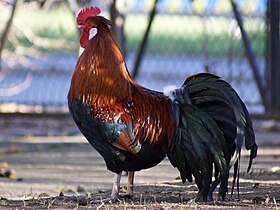
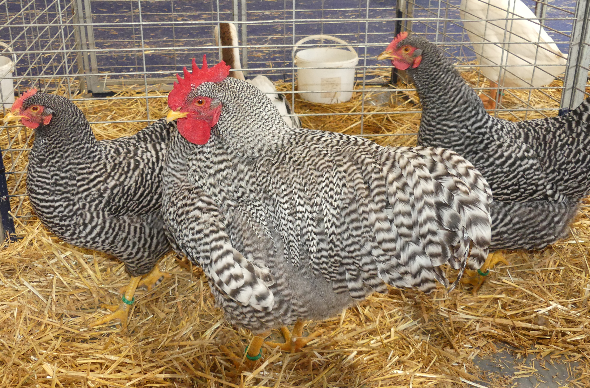
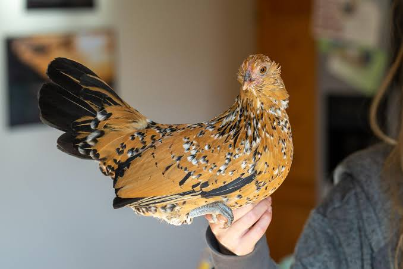
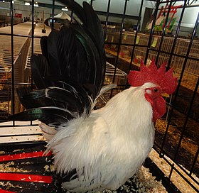
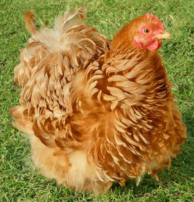

Les poulets
| Numero | Nom | Image | Wikipedia |
|---|---|---|---|
| 1 | Poulet Altsteirerhahn |  | Wikipedia : poulet_altsteirerhahn |
| 2 | Poulet Amrock |  | Wikipedia : poulet_amrock |
| 3 | Poulet Barbu Danvers |  | Wikipedia : poulet_barbu_danvers |
| 4 | Poulet Chabo |  | Wikipedia : poulet_chabo |
| 5 | Poulet Pekin |  | Wikipedia : poulet_pekin |